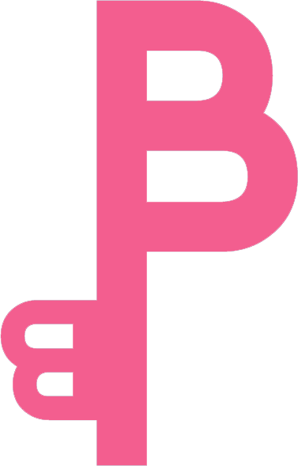

<ion-header class="ion-no-border color_primario2 ion-text-center">
  <ion-toolbar class="b_transparent">
    <ion-buttons slot="start">
      <ion-button color="light" *ngIf="back == 'si'; else filtros" (click)="goBack()">
        <ion-icon name="arrow-back-outline" slot="icon-only"></ion-icon>
      </ion-button>
      <ng-template #filtros>
        <ion-button color="light" (click)="abriFiltros()">
          <ion-icon name="options-outline" slot="icon-only"></ion-icon>
        </ion-button>
      </ng-template>
    </ion-buttons>

    

    <ion-buttons slot="end">
      <ion-menu-button color="light" (click)="playSound()"></ion-menu-button>
    </ion-buttons>
  </ion-toolbar>
  <ion-toolbar *ngIf="titulo" class="ion-text-center b_transparent">
    <h1>
      <ion-text color="light">{{titulo}}</ion-text>
    </h1>
  </ion-toolbar>
</ion-header>